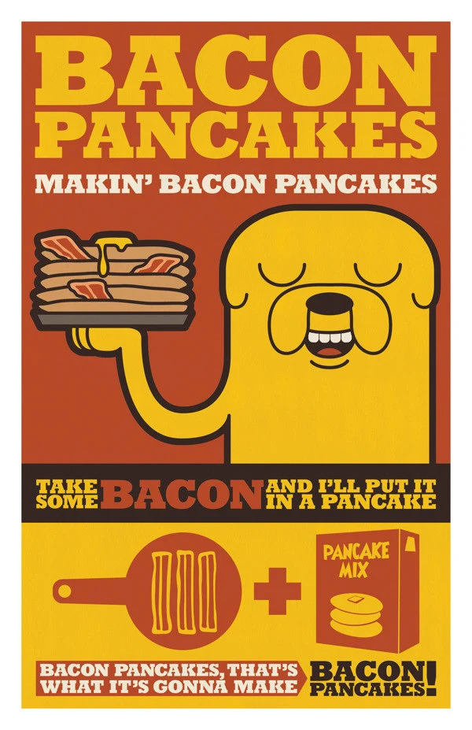

Bacon Pancakes

The perfect balance between the saltieness of bacon and the sweetness of pancakes easily made within minutes!!!
Let's be honest, no one but jake the dog says it better with this mini song he sings while cooking...
"Bacon pancakes, makin' bacon pancakes, get some bacon and i put it in a pancake, bacon pancakes thats what its gonna make bacon pancakeees!"
Ingredients
- Bacon
- Flour
- Sugar
- Baking Soda
- Baking Powder
- Kosher Salt
- Buttermilk
- Eggs
- Butter
Steps
- Melt your butter in the pan.
- Mix some flour, sugar,baking soda and powder, some kosher salt in a bowl.
- Add buttermilk to your dry ingredients.
- Add your pancake mix into your pan and cook the pancakes until they're fluffy enough.
- Cook your bacon until golden brown.
- Add your bacon on top of your pancakes and serve them with pride.
Congratulations, you have earned the achievement "BACON PANCAKES".
Recipie for the heavenly Perfect Sandwich, brought to you by the master chef of OOO, Jake the Dog.
Recipie for sweet sweet Finn Cakes a delicacy courtesy of Finn the Human.
Click HERE to go back to the main page.